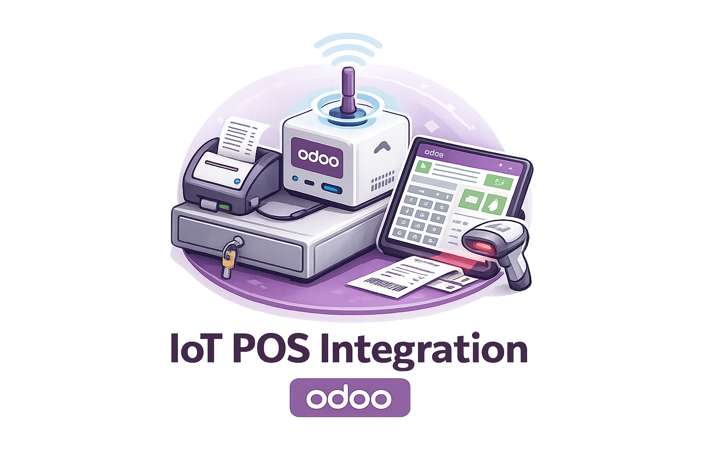

Route Point of Sale receipt and preparation printing to Community IoT devices on Odoo 17 Community.
This repository contains only the Odoo addon. The external Community IoT Agent is distributed separately.